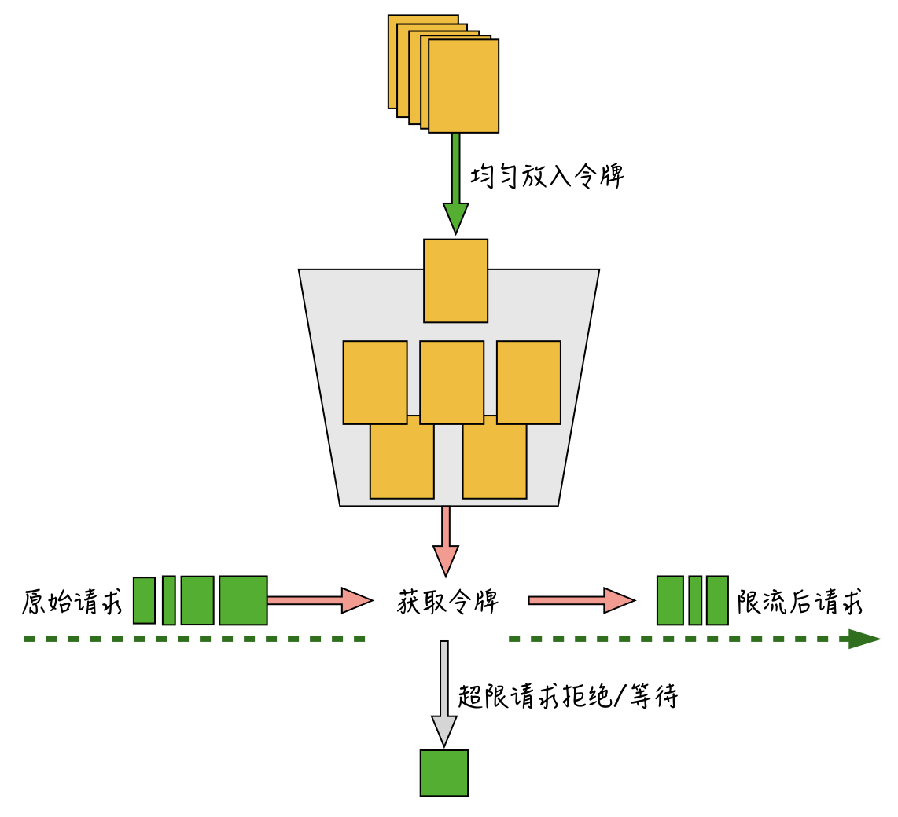
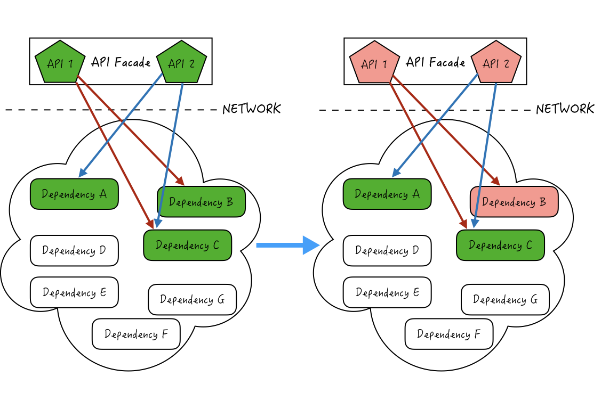

- 00 开篇词 搞懂“实时交互”的IM技术，将会有什么新机遇？.md.html
- 01 架构与特性：一个完整的IM系统是怎样的？.md.html
- 02 消息收发架构：为你的App，加上实时通信功能.md.html
- 03 轮询与长连接：如何解决消息的实时到达问题？.md.html
- 04 ACK机制：如何保证消息的可靠投递？.md.html
- 05 消息序号生成器：如何保证你的消息不会乱序？.md.html
- 06 HttpDNS和TLS：你的消息聊天真的安全吗？.md.html
- 07 分布式锁和原子性：你看到的未读消息提醒是真的吗？.md.html
- 08 智能心跳机制：解决网络的不确定性.md.html
- 09 分布式一致性：让你的消息支持多终端漫游.md.html
- 10 自动智能扩缩容：直播互动场景中峰值流量的应对.md.html
- 11 期中实战：动手写一个简易版的IM系统.md.html
- 12 服务高可用：保证核心链路稳定性的流控和熔断机制.md.html
- 13 HTTP Tunnel：复杂网络下消息通道高可用设计的思考.md.html
- 14 分片上传：如何让你的图片、音视频消息发送得更快？.md.html
- 15 CDN加速：如何让你的图片、视频、语音消息浏览播放不卡？.md.html
- 16 APNs：聊一聊第三方系统级消息通道的事.md.html
- 17 Cache：多级缓存架构在消息系统中的应用.md.html
- 18 Docker容器化：说一说IM系统中模块水平扩展的实现.md.html
- 19 端到端Trace：消息收发链路的监控体系搭建.md.html
- 20 存储和并发：万人群聊系统设计中的几个难点.md.html
- 21 期末实战：为你的简约版IM系统，加上功能.md.html
- 22 答疑解惑：不同即时消息场景下架构实现上的异同.md.html
- 结束语 真正的高贵，不是优于别人，而是优于过去的自己.md.html
- 捐赠
12 服务高可用：保证核心链路稳定性的流控和熔断机制
你好，我是袁武林。
在第10讲“自动智能扩缩容：直播互动场景中峰值流量的应对”中，我分析了直播互动场景中“突发流量”和“高并发峰值”业务形态下的几个关键技术点，并介绍了具体的应对方式。
但是，仅从设计优化、服务拆分、自动扩容等方面进行优化，有时候并不能完全解决问题。比如，有时流量增长过快，扩容流程还来不及完成，服务器可能就已经抗不住了。
不仅如此，在即时消息系统的很多实现中，业务上对于外部接口或者资源的依赖比较多。比如：发消息可能需要依赖“垃圾内容识别”的API来进行消息内容的过滤；下推图片消息时，推送服务需要依赖图片服务获取缩略图来进行推流；有的时候，当业务中依赖的这些接口、资源不可用或变慢时，会导致业务整体失败或者被拖慢而造成超时，影响服务的整体可用性。
对于上面这些问题，在实际线上业务中其实并不少见，甚至可以说是常态化。既然突发流量我们没法预测，业务上也不可能不依赖任何外部服务和资源，那么有什么办法能尽量避免，或者降低出现这些问题时对核心业务的影响呢？
流量控制
针对超高流量带来的请求压力，业界比较常用的一种方式就是“流控”。
“流控”这个词你应该不陌生，当我们坐飞机航班延误或者被取消时，航空公司给出的原因经常就是“因为目的机场流量控制”。对于机场来说，当承载的航班量超过极限负荷时，就会限制后续出港和到港的航班来进行排队等候，从而保护整个机场的正常运转。
同样，在即时消息系统中，突发超高流量时，为了避免服务器整体被流量打死，我们可以通过流控来扔掉或者通过排队的方式来保护系统在能力范围内的运转。比如，我在第10讲“自动智能扩缩容：直播互动场景中峰值流量的应对”中讲到，当有突发的高热度直播活动时，为了保护推送服务的整体可用性，我们可以通过流控扔掉一些非核心的消息，比如一些普通的进出场消息或点赞消息。
流控的常用算法
目前，业界常用的流控算法有两种：漏桶算法和令牌桶算法。
漏桶算法
“漏桶算法”的主要目的是控制数据注入到网络的速率，平滑网络上的突发流量。“漏桶算法”在实现上文如其名：它模拟的是一个漏水的桶，所有外部的水都先放进这个水桶，而这个桶以匀速往外均匀漏水，如果水桶满了，外部的水就不能再往桶里倒了。
这里你可以把这些外部的水想象成原始的请求，桶里漏出的水就是被算法平滑过后的请求。从这里也可以看出来，漏桶算法可以比较好地控制流量的访问速度。
令牌桶算法
令牌桶算法是流控中另一种常用算法，控制的是一个时间窗口内通过的数据量。令牌桶算法大概实现是这样的：
- 每 1/r秒往桶里放入一个令牌，r是用户配置的平均发送速率（也就是每秒会有r个令牌放入）。
- 桶里最多可以放入b个令牌，如果桶满了，新放入的令牌会被丢弃。
- 如果来了n个请求，会从桶里消耗掉n个令牌。
- 如果桶里可用令牌数小于n，那么这n个请求会被丢弃掉或者等待新的令牌放入。
请求通过令牌桶算法实现限流的大概过程，我在这里画了一张图。

算法按一定速度均匀往桶里放入令牌，原始请求进入后，根据请求量从令牌桶里取出需要的令牌数，如果令牌数不够，会直接抛弃掉超限的请求或者进行等待，能成功获取到令牌的请求才会进入到后端服务器。
与漏桶算法“精确控制速率”不太一样的是，由于令牌桶的桶本身具备一定的容量，可以允许一次把桶里的令牌全都取出，因此，令牌桶算法在限制请求的平均速率的同时，还允许一定程度的突发流量。
比如，明星粉丝群的场景里，平时用户发消息的请求是比较小的，一般都比设置的阈值小很多，这样令牌桶平时都是处于“满”的状态；如果群隶属的明星突然空降出现在群里，群里的粉丝瞬间活跃起来，会快速、突发地消耗掉令牌桶里缓存的b个令牌，对于后端业务层就会出现一定的峰值流量。
通过令牌桶算法来限流的应用实例是比较多的，Google开源的Guava就通过令牌桶算法实现了一个单机版的RateLimiter，Google在工程实现上做了一些优化，比如SmoothBursty特性支持累计N个时间窗口产生的令牌桶，这样应对突发流量的能力会更好一些。
全局流控
对于单机瓶颈的问题，通过单机版的流控算法和组件就能很好地实现单机保护。但在分布式服务的场景下，很多时候的瓶颈点在于全局的资源或者依赖，这种情况就需要分布式的全局流控来对整体业务进行保护。
业界比较通用的全局流控方案，一般是通过中央式的资源（如：Redis、Nginx）配合脚本来实现全局的计数器，或者实现更为复杂的漏桶算法和令牌桶算法，比如可以通过Redis的INCR命令配合Lua实现一个限制QPS（每秒查询量）的流控组件。
下面的示例代码是一个精简版的Redis+Lua实现全局流控的例子：
-- 操作的Redis Key
local rate_limit_key = KEYS[1]
-- 每秒最大的QPS许可数
local max_permits = ARGV[1]
-- 此次申请的许可数
local incr_by_count_str = ARGV[2]
-- 当前已用的许可数
local currentStr = redis.call('get', rate_limit_key)
local current = 0
if currentStr then
current = tonumber(currentStr)
end
-- 剩余可分发的许可数
local remain_permits = tonumber(max_permits) - current
local incr_by_count = tonumber(incr_by_count_str)
-- 如果可分发的许可数小于申请的许可数，只能申请到可分发的许可数
if remain_permits < incr_by_count then
incr_by_count = remain_permits
end
-- 将此次实际申请的许可数加到Redis Key里面
local result = redis.call('incrby', rate_limit_key, incr_by_count)
-- 初次操作Redis Key设置1秒的过期
if result == incr_by_count then
redis.call('expire', rate_limit_key, 1)
end
-- 返回实际申请到的许可数
return incr_by_co
一个需要注意的细节是：在每次创建完对应的限流Key后，你需要设置一个过期的时间。整个操作是原子化的，这样能避免分布式操作时设置过期时间失败，导致限流的Key一直无法重置，从而使限流功能不可用。
此外，在实现全局流控时还有两个问题需要注意：一个是流控的粒度问题，另一个是流控依赖资源存在瓶颈的问题。下面我们分别来看一下，在实现全局流控时是如何解决这两个问题的。
细粒度控制
首先是针对流控的粒度问题。举个例子：在限制QPS的时候，流控粒度太粗，没有把QPS均匀分摊到每个毫秒里，而且边界处理时不够平滑，比如上一秒的最后一个毫秒和下一秒的第一个毫秒都出现了最大流量，就会导致两个毫秒内的QPS翻倍。
一个简单的处理方式是把一秒分成若干个N毫秒的桶，通过滑动窗口的方式，将流控粒度细化到N毫秒，并且每次都是基于滑动窗口来统计QPS，这样也能避免边界处理时不平滑的问题。
流控依赖资源瓶颈
全局流控实现中可能会出现的另一个问题是，有时入口流量太大，导致实现流控的资源出现访问瓶颈，反而影响了正常业务的可用性。在微博消息箱业务中，就发生过流控使用的Redis资源由于访问量太大导致出现不可用的情况。
针对这种情况，我们可以通过“本地批量预取”的方式来降低对资源的压力。
所谓的“本地批量预取”，是指让使用限流服务的业务进程，每次从远程资源预取多个令牌在本地缓存，处理限流逻辑时先从本地缓存消耗令牌，本地消费完再触发从远程资源获取到本地缓存，如果远程获取资源时配额已经不够了，本次请求就会被抛弃。
通过“本地批量预取”的方式，能大幅降低对资源的压力，比如每次预取10个令牌，那么相应地对资源的压力能降低到1/10。
但是有一点需要注意，本地预取可能会导致一定范围的限流误差。比如：上一秒预取的10个令牌，在实际业务中下一秒才用到，这样会导致下一秒业务实际的请求量会多一些，因此本地预取对于需要精准控制访问量的场景来说可能不是特别适合。
自动熔断机制
针对突发流量，除了扩容和流控外，还有一个能有效保护系统整体可用性的手段就是熔断机制。
不过在介绍熔断机制前，我们先来了解一下多依赖的微服务中的雪崩效应，因为在没有“熔断机制”前，雪崩效应在多依赖服务中往往会导致一个服务出问题，从而拖慢整个系统的情况。
在第10讲“自动智能扩缩容：直播互动场景中峰值流量的应对”中有讲过，为了便于管理和隔离，我们经常会对服务进行解耦，独立拆分解耦到不同的微服务中，微服务间通过RPC来进行调用和依赖。如下图所示：

API 1和API 2一起关联部署，而且共同依赖多个依赖服务A、B、C。如果此时API 1依赖的服务B由于资源或者网络等原因造成接口变慢，就会导致和API 1一起关联部署的API 2也出现整体性能被拖累变慢的情况，继而导致依赖API 1和API 2的其他上层的服务也级联地性能变差，最终可能导致系统整体性能的雪崩。
虽然服务间的调用能够通过超时控制来降低被影响的程度，但在很多情况下，单纯依赖超时控制很难避免依赖服务性能恶化的问题。这种情况下，需要能快速“熔断”对这些性能出现问题的依赖调用。
一种常见的方式是手动通过开关来进行依赖的降级，微博的很多场景和业务都有用到开关来实现业务或者资源依赖的降级。
另一种更智能的方式是自动熔断机制。自动熔断机制主要是通过持续收集被依赖服务或者资源的访问数据和性能指标，当性能出现一定程度的恶化或者失败量达到某个阈值时，会自动触发熔断，让当前依赖快速失败（Fail-fast），并降级到其他备用依赖，或者暂存到其他地方便于后续重试恢复。在熔断过程中，再通过不停探测被依赖服务或者资源是否恢复，来判断是否自动关闭熔断，恢复业务。
自动熔断这一机制目前业界已经有很多比较成熟的框架可以直接使用，比如，Netflix公司出品的Hystrix，以及目前社区很火热的Resilience4j等。
小结
今天，我主要从服务高可用的角度出发，带你了解了如何在面对突发流量时，通过流控来保障系统整体运行在压力阈值范围内，从而让业务大部分仍然处于“柔性可用”的状态，而不至于被流量打死。
接下来我介绍了一下流控实现的两大算法：漏桶算法和令牌桶算法。
- 漏桶算法的核心能力在于平滑实际流量的速度，让被流控的服务始终按固定速度来处理流量。
- 令牌桶算法并不精确限制流量给到被流控服务的速度，主要是限制请求的平均速度，而且允许被流控服务出现一定突发流量请求。
此外，针对分布式业务需要控制全局流量的场景，我们一般还可以通过中央式的资源来实现，比如Redis+Lua。
在全局流控实现中，我们可以通过滑动窗口和细粒度分桶来解决流量不均衡和边界处理不平滑的问题；对于超大流量可能导致中央资源出现瓶颈的情况，可以通过“本地批量预取”来降低中央资源的压力。
另外，对于突发流量和微服务间依赖复杂导致的雪崩问题，就需要通过“熔断机制”来进行快速失败，我们可以通过手动降级和自动熔断来互相配合，以保障系统的整体稳定性和可用性。
“限流”“熔断机制”和“缓存”一起被列为高并发应用工程实现中的三板斧，可见其对高并发业务稳定性的重要程度。在包括即时通讯的很多业务场景中，超高并发的突发流量也是随处可见。所以，掌握好流控和熔断这两种利器，也是对我们后端架构能力的一种很好的提升。
最后给你留一个思考题：自动熔断机制中，如何来确认Fail-fast时的熔断阈值（比如：当单位时间内访问耗时超过1s的比例达到50%时，对该依赖进行熔断）？
以上就是今天课程的内容，欢迎你给我留言，我们可以在留言区一起讨论。感谢你的收听，我们下期再见。
© 2019 - 2023 Liangliang Lee. Powered by gin and hexo-theme-book.